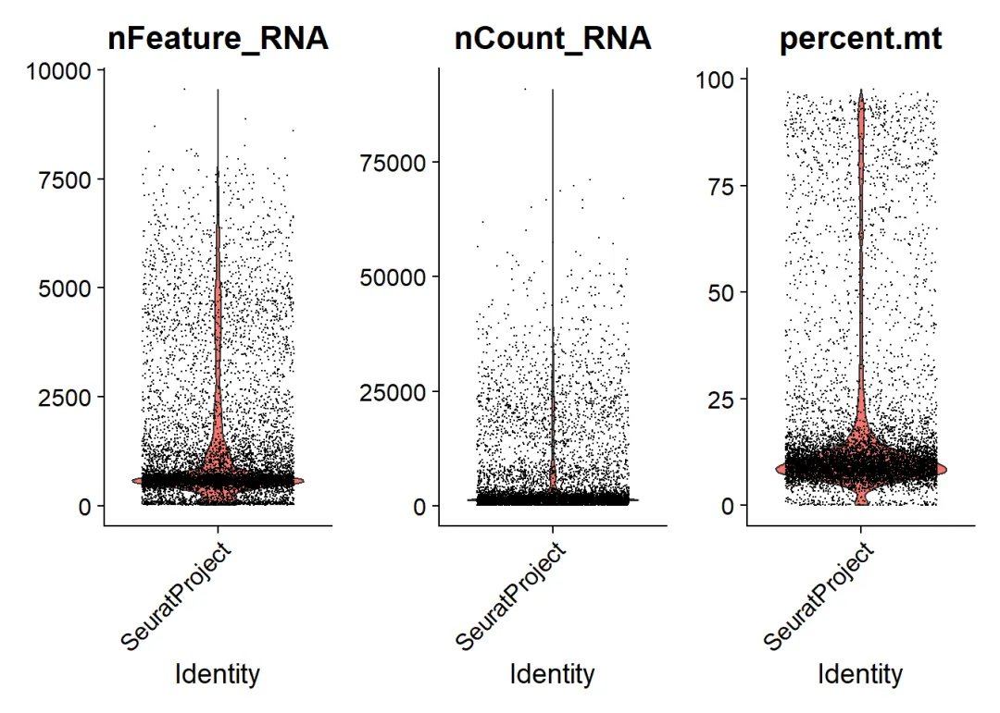
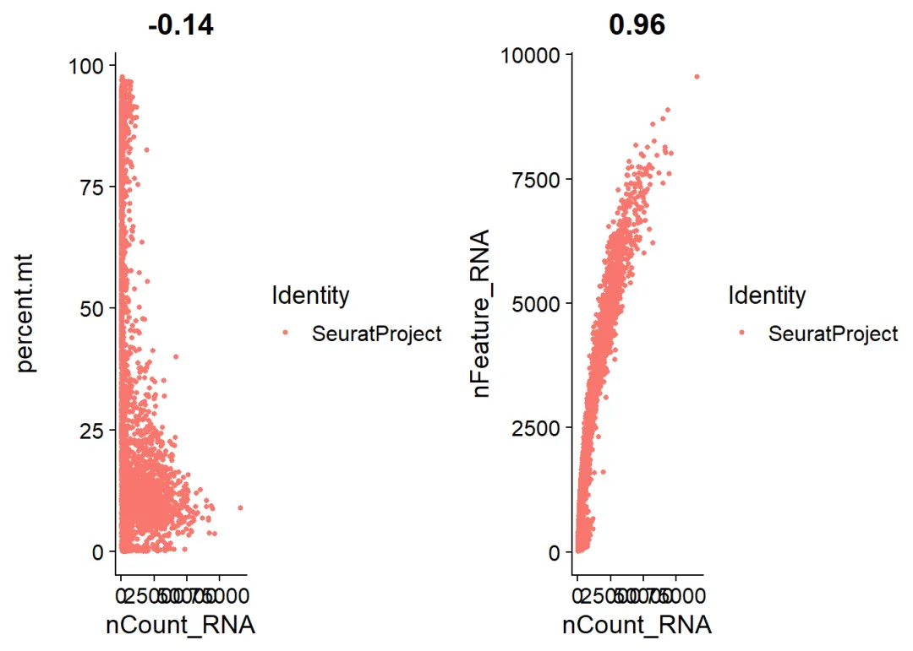
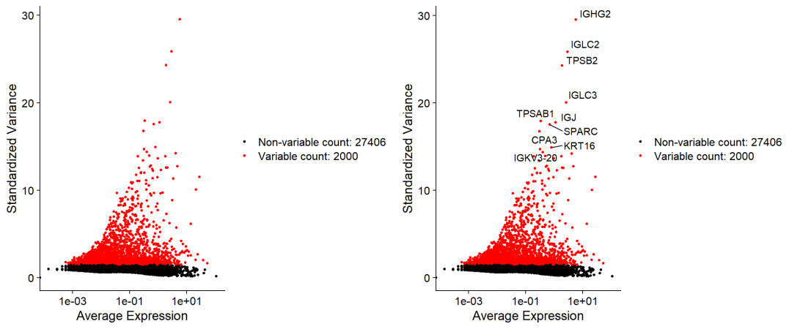
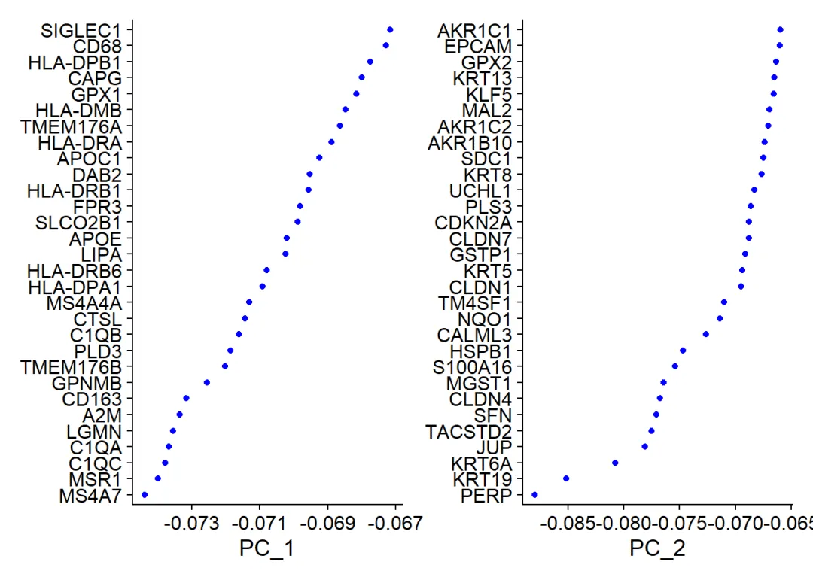
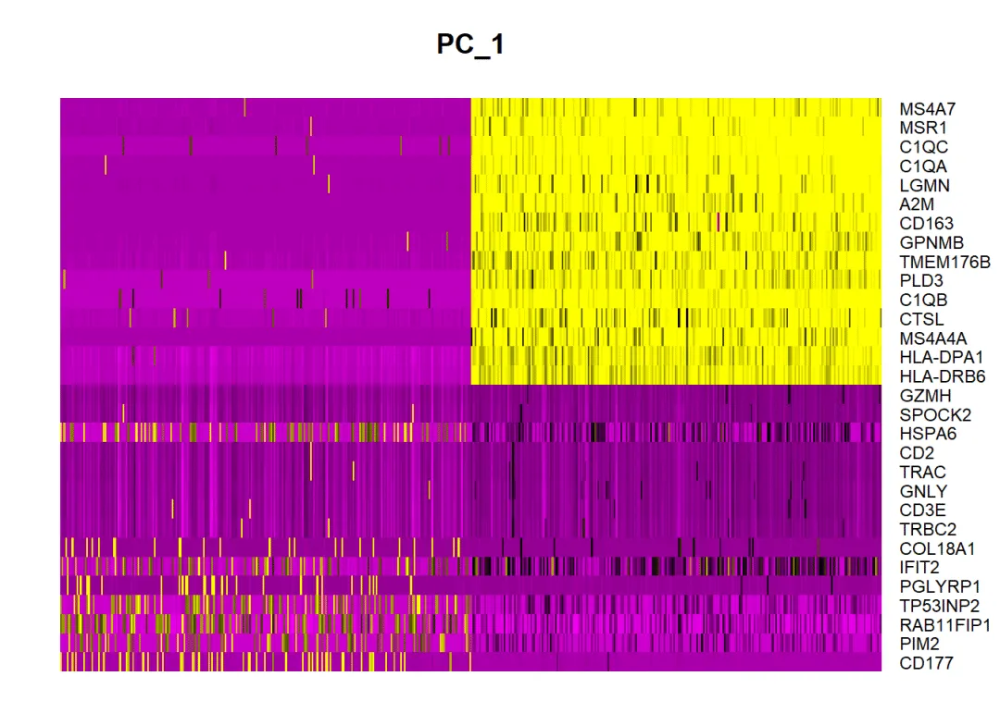
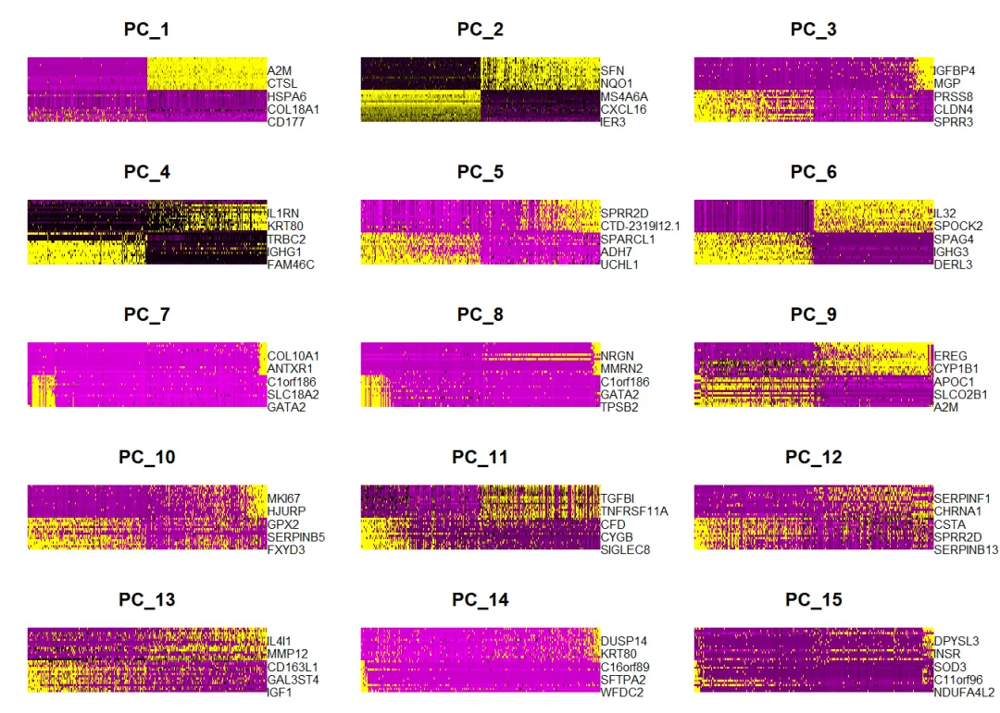
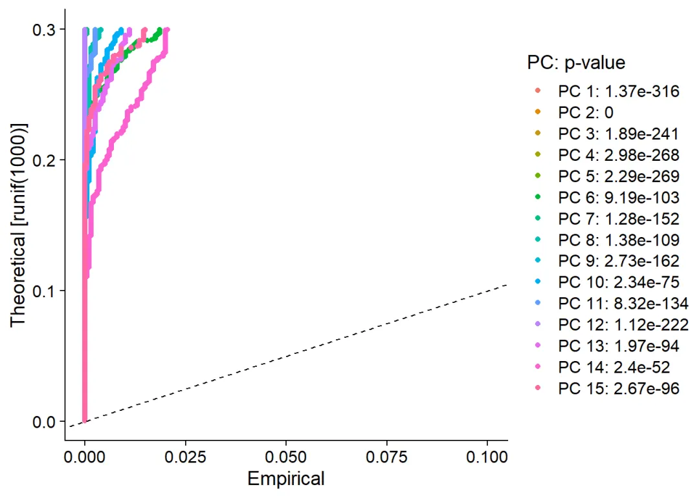
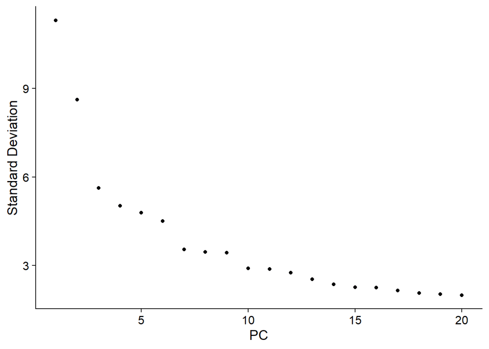
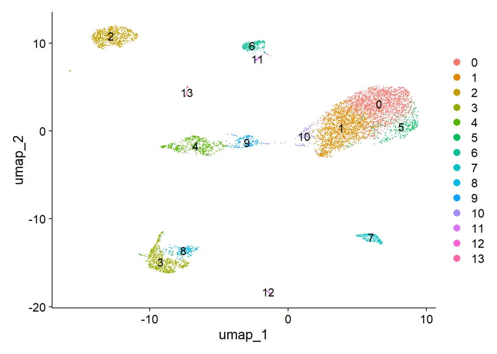
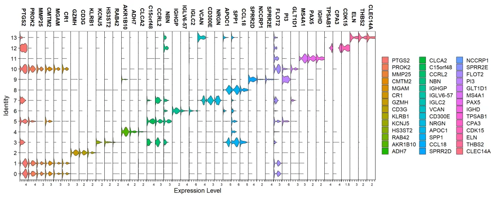

BD Rhapsody定量输出文件读取
原文：https://mp.weixin.qq.com/s?__biz=MzAwMzIzOTk5OQ==&mid=2247519706&idx=1&sn=9d084bd8edf6ab4d9184672e5a4a2722&chksm=9b3cf48aac4b7d9c16ef85de7a5f33e65552bbba5d11d2170237063cf754fe9ff376647d3bd7#rd 合集：单细胞教程全收录
演示过程

此前我们做了BD Rhapsody平台单细胞转录组定量流程，有些同学表示不知道如何读取cwl-runner输出的表达矩阵，这里我们来演示一下：
测试数据与教程的下载地址：
输出文件夹下会有一个以_Expression_Data.st结尾的文件，即为我们需要的表达矩阵。
# 读取数据：
expr <- read.table('Sample_f1_Expression_Data.st',header = T)
# 查看数据结构：
head(expr)
## Cell_Index Gene RSEC_Reads Raw_Molecules RSEC_Adjusted_Molecules
## 1 45133 A2M 1 1 1
## 2 45133 A4GALT 3 1 1
## 3 45133 AAAS 8 3 3
## 4 45133 AACS 17 5 4
## 5 45133 AAED1 3 2 2
## 6 45133 AAGAB 38 8 8
这几列数据对应的含义是：
Cell_Index: 细胞索引 - 用于标识每个细胞的唯一编号。
Gene: 基因 - 表示该行数据对应的基因名称。
RSEC_Reads: RSEC读数 - 该基因在对应细胞中的RSEC（Robust Single-cell Effective Count）读取数。
Raw_Molecules: 原始分子数 - 该基因在对应细胞中的原始分子计数。
RSEC_Adjusted_Molecules: RSEC调整后的分子数 - 基于RSEC方法调整后的分子计数。
那么对应的，我们只需要以Cell_Index作为列名，Gene作为行名，RSEC_Adjusted_Molecules作为填充值构建稀疏矩阵即可。
library(Seurat)
## Warning: 程辑包'Seurat'是用R版本4.3.3 来建造的
## 载入需要的程辑包：SeuratObject
## Warning: 程辑包'SeuratObject'是用R版本4.3.3 来建造的
## 载入需要的程辑包：sp
## Warning: 程辑包'sp'是用R版本4.3.3 来建造的
##
## 载入程辑包：'SeuratObject'
## The following object is masked from 'package:base':
##
## intersect
library(Matrix)
## Warning: 程辑包'Matrix'是用R版本4.3.3 来建造的
# 将长格式的数据框转换为稀疏矩阵
sparse_matrix <- sparseMatrix(
i = as.numeric(factor(expr$Gene)),
j = as.numeric(factor(expr$Cell_Index)),
x = expr$RSEC_Adjusted_Molecules
)
# 将行和列名称设置为基因名称和细胞索引
rownames(sparse_matrix) <- levels(factor(expr$Gene))
colnames(sparse_matrix) <- levels(factor(expr$Cell_Index))
# 创建Seurat对象
scRNA <- CreateSeuratObject(counts = sparse_matrix)
## Warning: Feature names cannot have underscores ('_'), replacing with dashes
## ('-')
# 检查Seurat对象
scRNA
## An object of class Seurat
## 29406 features across 8870 samples within 1 assay
## Active assay: RNA (29406 features, 0 variable features)
## 1 layer present: counts
检查一下行名和列名对不对，Seurat对象应该是一个行名为基因名，列名是细胞barcode的对象：
# 没问题：
colnames(scRNA)[1:5]
## [1] "48" "118" "190" "290" "411"
rownames(scRNA)[1:5]
## [1] "7SK" "A1BG" "A1BG-AS1" "A1CF" "A2M"
继续往下做基础分析看看：
scRNA[["percent.mt"]] <- PercentageFeatureSet(scRNA, pattern = "^MT-") #通过线粒体的序列数来对数据进行计算
head(scRNA@meta.data, 5) #QC的数据存在meta.data里，可以用这个来查看前5行
## orig.ident nCount_RNA nFeature_RNA percent.mt
## 48 SeuratProject 1519 594 10.730744
## 118 SeuratProject 1430 577 10.909091
## 190 SeuratProject 2056 927 22.422179
## 290 SeuratProject 922 461 9.544469
## 411 SeuratProject 26151 5310 8.607701
VlnPlot(scRNA, features = c("nFeature_RNA", "nCount_RNA", "percent.mt"), ncol = 3)
## Warning: Default search for "data" layer in "RNA" assay yielded no results;
## utilizing "counts" layer instead.

#用小提琴图来展示QC的结果，展示了每个barcode中基因的数目、UMI数目以及线粒体基因含量的分布情况
plot1 <- FeatureScatter(scRNA, feature1 = "nCount_RNA", feature2 = "percent.mt")
plot2 <- FeatureScatter(scRNA, feature1 = "nCount_RNA", feature2 = "nFeature_RNA")
CombinePlots(plots = list(plot1, plot2)) #高变基因，判断趋势及占比
## Warning: CombinePlots is being deprecated. Plots should now be combined using
## the patchwork system.

scRNA <- subset(scRNA, subset = nFeature_RNA > 200 & nFeature_RNA < 5000 & percent.mt < 20)
#质控，选子集，RNA数量在200与2500之间的，多的可能是低质量细胞或空drouplets，gene count多的可能是doublets or multiplets
scRNA <- NormalizeData(scRNA, normalization.method = "LogNormalize", scale.factor = 10000)
## Normalizing layer: counts
#用LogNormalize法对数据进行标准化（乘10000再取对数）数据存在scRNA[["RNA"]]@data.里
#默认的方法也完成了log1p的操作，得到的结果就类似于TPM的对数
scRNA <- FindVariableFeatures(scRNA, selection.method = "vst", nfeatures = 2000)
## Finding variable features for layer counts
# 筛选高变基因（输出2000个），用于下游的PCA及分群
top10 <- head(VariableFeatures(scRNA), 10) #输出差异最大的十个基因
plot1 <- VariableFeaturePlot(scRNA)
plot2 <- LabelPoints(plot = plot1, points = top10, repel = TRUE)
## When using repel, set xnudge and ynudge to 0 for optimal results
CombinePlots(plots = list(plot1, plot2)) #输出差异基因散点图（有无标签）
## Warning: CombinePlots is being deprecated. Plots should now be combined using
## the patchwork system.
## Warning in scale_x_log10(): log-10 transformation introduced infinite values.
## log-10 transformation introduced infinite values.

scRNA <- ScaleData(scRNA, features = rownames(scRNA)) #将数据进行标准化，为后续的PCA分析做准备，数据存在scRNA[["RNA"]]@scale.data
## Centering and scaling data matrix
##for PCA DoHeatmap
#scRNA <- ScaleData(scRNA)#only4VariableFeatures
scRNA <- ScaleData(scRNA, vars.to.regress = "percent.mt") #剔除不想要的变量（如线粒体的比例）
## Regressing out percent.mt
## Centering and scaling data matrix
## Warning: Different features in new layer data than already exists for
## scale.data
#scRNA[["RNA"]]@scale.data
scRNA <- RunPCA(scRNA, features = VariableFeatures(object = scRNA)) #PCA降维分析
## PC_ 1
## Positive: CD177, PIM2, RAB11FIP1, TP53INP2, PGLYRP1, IFIT2, COL18A1, TRBC2, CD3E, GNLY
## TRAC, CD2, HSPA6, SPOCK2, GZMH, CEACAM1, NKG7, GZMA, PRF1, FGFBP2
## IL32, CAMP, IL2RB, PI3, PTP4A3, CTSW, GZMB, NUAK2, CD7, KLRD1
## Negative: MS4A7, MSR1, C1QC, C1QA, LGMN, A2M, CD163, GPNMB, TMEM176B, PLD3
## C1QB, CTSL, MS4A4A, HLA-DPA1, HLA-DRB6, LIPA, APOE, SLCO2B1, FPR3, HLA-DRB1
## DAB2, APOC1, HLA-DRA, TMEM176A, HLA-DMB, GPX1, CAPG, HLA-DPB1, CD68, SIGLEC1
## PC_ 2
## Positive: IER3, VIM, CD14, LYZ, FCGRT, FTL, CXCL16, CD74, MS4A7, ASAH1
## HLA-DRA, FCGR3A, MS4A6A, MSR1, C1QA, C1QC, CD163, IFI6, MS4A4A, HLA-DMB
## CD83, C1QB, HLA-DPA1, CCL3, HLA-DPB1, FPR3, SLCO2B1, APOC1, CXCL2, APOE
## Negative: PERP, KRT19, KRT6A, JUP, TACSTD2, SFN, CLDN4, MGST1, S100A16, HSPB1
## CALML3, NQO1, TM4SF1, CLDN1, KRT5, GSTP1, CLDN7, CDKN2A, PLS3, UCHL1
## KRT8, SDC1, AKR1B10, AKR1C2, MAL2, KLF5, KRT13, GPX2, EPCAM, AKR1C1
## PC_ 3
## Positive: SPRR3, TACSTD2, SPRR1B, KRT6A, TMPRSS11E, SPRR1A, CLDN4, CLDN7, LCN2, ELF3
## TMPRSS11D, PERP, PRSS8, SPRR2A, KRT16, KRT13, KRT80, PITX1, CTD-2319I12.1, SPRR2D
## MAL2, S100A14, SERPINB2, KRT19, CSTA, CD24P4, ANXA1, KRT6B, PRSS22, A2ML1
## Negative: SPARC, BGN, IGFBP7, CALD1, COL4A2, IGFBP4, COL1A2, LAMB1, FSTL1, FN1
## COL5A2, MGP, THY1, MMP2, COL3A1, COL6A2, COL1A1, LAMA4, LHFP, PTRF
## LUM, NID1, DCN, COL4A1, MYL9, COL6A1, C1R, CRIP2, COL6A3, PRSS23
## PC_ 4
## Positive: FAM46C, MZB1, DERL3, CD79A, FCRL5, ITM2C, IGHG1, SSR4, SLAMF7, DUSP5
## POU2AF1, CCL5, TRBC2, NKG7, IGHGP, CD3E, CPNE5, IGKC, SPAG4, RAB30
## XBP1, IGHG4, GNLY, ANKRD36BP2, IGHG3, RPS5, TNFRSF17, SEC11C, IL32, IGHG2
## Negative: IER3, FTL, SPRR3, TIMP2, SPRR1B, IL1RN, SPRR2A, TMPRSS11E, SLPI, TMPRSS11D
## RAB11FIP1, KRT80, LCN2, SPRR1A, FCGRT, CXCL16, SPRR2D, PRSS8, EMP1, PI3
## CTD-2319I12.1, CXCL1, PRSS22, CEACAM6, A2ML1, CSTA, CEACAM5, TP53INP2, ASAH1, IFIT2
## PC_ 5
## Positive: UCHL1, AKR1C2, AKR1C1, AKR1B10, GSTM3, NTRK2, ADH7, ALDH3A1, TP63, KRT8
## CKS1B, GPX2, SPARCL1, PKP1, CLCA2, NQO1, MIR205HG, AKR1C3, TOP2A, TPX2
## SERPINB5, SOX2, BIRC5, EPCAM, CCNB2, FOXM1, STMN1, TMEM97, UGDH, MYC
## Negative: SPRR1B, SPRR3, TMPRSS11E, SPRR2A, KRT80, SPRR2D, SPRR1A, HOPX, TMPRSS11D, LCN2
## NDRG2, CTD-2319I12.1, PRSS8, PRSS22, KRT78, KLK10, A2ML1, MALL, CEACAM6, CEACAM5
## KLK11, SLPI, PDZK1IP1, EPS8L1, SERPINB2, NCCRP1, C1orf116, KLK12, PRSS27, FUT3
print(scRNA[["pca"]], dims = 1:5, nfeatures = 5) #打印PCA部分结果
## PC_ 1
## Positive: CD177, PIM2, RAB11FIP1, TP53INP2, PGLYRP1
## Negative: MS4A7, MSR1, C1QC, C1QA, LGMN
## PC_ 2
## Positive: IER3, VIM, CD14, LYZ, FCGRT
## Negative: PERP, KRT19, KRT6A, JUP, TACSTD2
## PC_ 3
## Positive: SPRR3, TACSTD2, SPRR1B, KRT6A, TMPRSS11E
## Negative: SPARC, BGN, IGFBP7, CALD1, COL4A2
## PC_ 4
## Positive: FAM46C, MZB1, DERL3, CD79A, FCRL5
## Negative: IER3, FTL, SPRR3, TIMP2, SPRR1B
## PC_ 5
## Positive: UCHL1, AKR1C2, AKR1C1, AKR1B10, GSTM3
## Negative: SPRR1B, SPRR3, TMPRSS11E, SPRR2A, KRT80
VizDimLoadings(scRNA, dims = 1:2, reduction = "pca")

DimHeatmap(scRNA, dims = 1, cells = 500, balanced = TRUE) #三种PCA展示方式

DimHeatmap(scRNA, dims = 1:15, cells = 500, balanced = TRUE) #展示15种PCA

#筛选合适的维度：
scRNA <- JackStraw(scRNA, num.replicate = 100) #重复计算次数
scRNA <- ScoreJackStraw(scRNA, dims = 1:20) #计算维度这一步花的时间比较久
JackStrawPlot(scRNA, dims = 1:15) #画出1到15个维度
## Warning: Removed 21000 rows containing missing values or values outside the scale range
## (`geom_point()`).

#JackStrawPlot相当于高级PCA，为挑选合适维度进行下游可视化提供依据
ElbowPlot(scRNA) #利用ElbowPlot来评价PC，PCA切记为了结果好看而降低PC数

scRNA <- FindNeighbors(scRNA, dims = 1:10)
## Computing nearest neighbor graph
## Computing SNN
scRNA <- FindClusters(scRNA, resolution = 0.5)
## Modularity Optimizer version 1.3.0 by Ludo Waltman and Nees Jan van Eck
##
## Number of nodes: 6917
## Number of edges: 225890
##
## Running Louvain algorithm...
## Maximum modularity in 10 random starts: 0.8872
## Number of communities: 14
## Elapsed time: 0 seconds
#细胞分群，resolution分辨率在细胞数在3000附近时一般设为0.4-1.2，resolution越大得到的类群越多
head(Idents(scRNA), 5) #看前五个分类群ID
## 48 118 290 480 560
## 0 5 1 1 0
## Levels: 0 1 2 3 4 5 6 7 8 9 10 11 12 13
#非线性降维方法：UMAP、tSNE
scRNA <- RunUMAP(scRNA, dims = 1:10) #运行UMAP算法
## Warning: The default method for RunUMAP has changed from calling Python UMAP via reticulate to the R-native UWOT using the cosine metric
## To use Python UMAP via reticulate, set umap.method to 'umap-learn' and metric to 'correlation'
## This message will be shown once per session
## 15:19:45 UMAP embedding parameters a = 0.9922 b = 1.112
## 15:19:45 Read 6917 rows and found 10 numeric columns
## 15:19:45 Using Annoy for neighbor search, n_neighbors = 30
## 15:19:45 Building Annoy index with metric = cosine, n_trees = 50
## 0% 10 20 30 40 50 60 70 80 90 100%
## [----|----|----|----|----|----|----|----|----|----|
## **************************************************|
## 15:19:46 Writing NN index file to temp file C:\Users\ADMINI~1\AppData\Local\Temp\RtmpyE7FkX\file26507696de1
## 15:19:46 Searching Annoy index using 1 thread, search_k = 3000
## 15:19:47 Annoy recall = 100%
## 15:19:47 Commencing smooth kNN distance calibration using 1 thread with target n_neighbors = 30
## 15:19:48 Initializing from normalized Laplacian + noise (using RSpectra)
## 15:19:48 Commencing optimization for 500 epochs, with 299704 positive edges
## 15:19:58 Optimization finished
#sce.all <- RunUMAP(sce.all, dims = 1:30, min.dist = 0.01, n.neighbors = 4L)
#可以调整亚群之间的距离
scRNA <- RunTSNE(scRNA, dims = 1:10) #运行TSNE算法，TSNE算法运行时间较UMAP更久
DimPlot(scRNA, reduction = "umap", label = TRUE)

#显示分类群的标号
scRNA.markers <- FindAllMarkers(scRNA, only.pos = TRUE, min.pct = 0.25, logfc.threshold = 0.25)
## Calculating cluster 0
## Calculating cluster 1
## Calculating cluster 2
## Calculating cluster 3
## Calculating cluster 4
## Calculating cluster 5
## Calculating cluster 6
## Calculating cluster 7
## Calculating cluster 8
## Calculating cluster 9
## Calculating cluster 10
## Calculating cluster 11
## Calculating cluster 12
## Calculating cluster 13
#寻找每一个分类群与其他所有细胞之间的标记基因，并只显示positive结果
library(dplyr)
## Warning: 程辑包'dplyr'是用R版本4.3.3 来建造的
##
## 载入程辑包：'dplyr'
##
## The following objects are masked from 'package:stats':
##
## filter, lag
##
## The following objects are masked from 'package:base':
##
## intersect, setdiff, setequal, union
# 筛选Top3 gene
top3gene <- scRNA.markers %>% group_by(cluster) %>% top_n(n = 3, wt = avg_log2FC)
# 查看marker
VlnPlot(scRNA, features = unique(top3gene$gene),pt.size = 0,stack = T)

接下来的分析探索就请大家自己完成啦，大家可以参考原数据集： https://ngdc.cncb.ac.cn/gsa-human/browse/HRA001033本教程用到的R语言环境：
sessionInfo()
## R version 4.3.0 (2023-04-21 ucrt)
## Platform: x86_64-w64-mingw32/x64 (64-bit)
## Running under: Windows 11 x64 (build 22621)
##
## Matrix products: default
##
##
## locale:
## [1] LC_COLLATE=Chinese (Simplified)_China.utf8
## [2] LC_CTYPE=Chinese (Simplified)_China.utf8
## [3] LC_MONETARY=Chinese (Simplified)_China.utf8
## [4] LC_NUMERIC=C
## [5] LC_TIME=Chinese (Simplified)_China.utf8
##
## time zone: Asia/Shanghai
## tzcode source: internal
##
## attached base packages:
## [1] stats graphics grDevices utils datasets methods base
##
## other attached packages:
## [1] dplyr_1.1.4 Matrix_1.6-5 Seurat_5.0.3 SeuratObject_5.0.1
## [5] sp_2.1-3
##
## loaded via a namespace (and not attached):
## [1] RColorBrewer_1.1-3 rstudioapi_0.16.0 jsonlite_1.8.8
## [4] magrittr_2.0.3 spatstat.utils_3.0-4 ggbeeswarm_0.7.2
## [7] farver_2.1.1 rmarkdown_2.27 vctrs_0.6.5
## [10] ROCR_1.0-11 spatstat.explore_3.2-6 htmltools_0.5.8.1
## [13] sass_0.4.9 sctransform_0.4.1 parallelly_1.37.1
## [16] KernSmooth_2.23-20 bslib_0.7.0 htmlwidgets_1.6.4
## [19] ica_1.0-3 plyr_1.8.9 plotly_4.10.4
## [22] zoo_1.8-12 cachem_1.0.8 igraph_2.0.3
## [25] mime_0.12 lifecycle_1.0.4 pkgconfig_2.0.3
## [28] R6_2.5.1 fastmap_1.1.1 fitdistrplus_1.1-11
## [31] future_1.33.1 shiny_1.8.1.1 digest_0.6.35
## [34] colorspace_2.1-0 patchwork_1.2.0 tensor_1.5
## [37] RSpectra_0.16-1 irlba_2.3.5.1 labeling_0.4.3
## [40] progressr_0.14.0 fansi_1.0.6 spatstat.sparse_3.0-3
## [43] httr_1.4.7 polyclip_1.10-6 abind_1.4-5
## [46] compiler_4.3.0 withr_3.0.0 fastDummies_1.7.3
## [49] highr_0.11 MASS_7.3-58.4 tools_4.3.0
## [52] vipor_0.4.7 lmtest_0.9-40 beeswarm_0.4.0
## [55] httpuv_1.6.14 future.apply_1.11.1 goftest_1.2-3
## [58] glue_1.7.0 nlme_3.1-162 promises_1.2.1
## [61] grid_4.3.0 Rtsne_0.17 cluster_2.1.4
## [64] reshape2_1.4.4 generics_0.1.3 gtable_0.3.4
## [67] spatstat.data_3.0-4 tidyr_1.3.1 data.table_1.15.2
## [70] utf8_1.2.4 spatstat.geom_3.2-9 RcppAnnoy_0.0.22
## [73] ggrepel_0.9.5 RANN_2.6.1 pillar_1.9.0
## [76] stringr_1.5.1 spam_2.10-0 RcppHNSW_0.6.0
## [79] limma_3.58.1 later_1.3.2 splines_4.3.0
## [82] lattice_0.21-8 survival_3.5-5 deldir_2.0-4
## [85] tidyselect_1.2.1 miniUI_0.1.1.1 pbapply_1.7-2
## [88] knitr_1.47 gridExtra_2.3 scattermore_1.2
## [91] xfun_0.45 statmod_1.5.0 matrixStats_1.2.0
## [94] stringi_1.8.3 lazyeval_0.2.2 yaml_2.3.8
## [97] evaluate_0.24.0 codetools_0.2-19 tibble_3.2.1
## [100] cli_3.6.2 uwot_0.1.16 xtable_1.8-4
## [103] reticulate_1.35.0 munsell_0.5.0 jquerylib_0.1.4
## [106] Rcpp_1.0.12 globals_0.16.3 spatstat.random_3.2-3
## [109] png_0.1-8 ggrastr_1.0.2 parallel_4.3.0
## [112] ggplot2_3.5.0 presto_1.0.0 dotCall64_1.1-1
## [115] listenv_0.9.1 viridisLite_0.4.2 scales_1.3.0
## [118] ggridges_0.5.6 leiden_0.4.3.1 purrr_1.0.2
## [121] rlang_1.1.3 cowplot_1.1.3
单细胞系列教程目录
 单细胞数据分析系列教程：B站视频，先看一遍视频再去看推送操作，建议至少看三遍：https://www.bilibili.com/video/BV1S44y1b76Z/本公众号单细胞相关资料都可以在这里订阅：scRNA-Seq学习手册2023_R语言版
scRNA-Seq学习手册Python版
单细胞数据分析系列教程：B站视频，先看一遍视频再去看推送操作，建议至少看三遍：https://www.bilibili.com/video/BV1S44y1b76Z/本公众号单细胞相关资料都可以在这里订阅：scRNA-Seq学习手册2023_R语言版
scRNA-Seq学习手册Python版
单细胞测序基础数据分析保姆级教程，代码部分整理在往期推送之中：手把手教你做单细胞测序数据分析|1.绪论 手把手教你做单细胞测序数据分析|2.各类数据结构与读取方法手把手教你做单细胞测序数据分析|3.单样本分析 手把手教你做单细胞测序数据分析|4.多样本整合 手把手教你做单细胞测序数据分析|5.细胞类型注释，从入门到入土手把手教你做单细胞测序数据分析|6组间差异分析 手把手教你做单细胞测序数据分析|7基因集富集分析 Seurat中分类变量处理技巧 沉浸式统计细胞比例
单细胞图片改造计划：改造单细胞降维图| 1.DimPlot的探索 改造单细胞降维图| 2.ggplot2中的DIY 改造单细胞降维图| 3.3D降维图与动图绘制 改造单细胞降维图| 4.一些造好的轮子 沉浸式统计细胞比例 改造单细胞FeaturePlot VlnPlot用法及ggplot复现 VlnPlot的ggplot改造
SCENIC转录因子分析：SCENIC单细胞转录因子预测|1.绪论 SCENIC单细胞转录因子预测|2.学习手册 SCENIC单细胞转录因子预测|3.软件安装与数据准备 SCENIC单细胞转录因子预测|4.精简版流程 SCENIC单细胞转录因子预测|5.step1+step2构建共表达网络与regulon SCENIC单细胞转录因子预测|6.Step3 利用AUCell对Regulon评分 SCENIC单细胞转录因子预测|7.Step4 二元矩阵的计算与可视化 SCENIC单细胞转录因子预测|8.Step5 regulon聚类、分群、降维 SCENIC单细胞转录因子预测|9.下游探索
上游fastq文件处理： 单细胞分析的最上游——处理Fastq文件：cellranger 单细胞分析的最上游——处理Fastq文件：dropseqRunnerCellranger报错：Unable to distinguish between [SC5P-R2, SC3Pv2] ... BD Rhapsody平台单细胞转录组定量流程
细胞通讯B站连续播放起来比较方便： https://www.bilibili.com/video/BV1Ab4y1W7qx?p=1往期推送《细胞通讯》1.概论《细胞通讯》2.1CellChat基础分析教程 《细胞通讯》2.2CellChat多组别分析 《细胞通讯》CellChat学习手册CellChat空转细胞通讯合辑 SeekSpace细胞通讯分析
拟时序分析B站连续播放起来比较方便： https://www.bilibili.com/video/BV1br4y1x7Hf?p=1往期推送《拟时序分析》1.概论 《拟时序分析》2.monocle概论《拟时序分析》3.monocle2实操：精简版拟时序 《拟时序分析》4.monocle2实操：完整版 单细胞测序数据进阶分析—《拟时序分析》5.初识monocle3 单细胞测序数据进阶分析—《拟时序分析》6.monocle3的降维、分群、聚类单细胞测序数据进阶分析—《拟时序分析》7.monocle3的拟时序分析 解决monocle2的orderCells报错的两种方法 一文搞定拟时序分析的下游可视化探索
scFAST系列scFAST分析| 01.绪论 scFAST分析| 02.单细胞分析准备工作 scFAST分析| 03.fast模块 scFAST分析| 04.Seurat分析及可视化 scFAST分析| 05.mut模块 一文学会scFAST-seq数据分析
其他单细胞相关技术贴也在这里：单细胞必修课——Seurat流程 scRNA-Seq双细胞过滤手册 scRNA-Seq学习手册Seurat V4修订版快速上手Seurat V5 单细胞Figure 1常见图表细胞的数量由誰决定？单细胞中应该如何做GSVA？答读者问（三）：单细胞测序前景答读者问（四）：如何分析细胞亚群答读者问（八）：为什么Read10X也会报错? 答读者问（十）整合后的表达矩阵，如何拆分出分组信息？ 答读者问（十一）如何一次性读取一个目录下的cellranger输出文件？ 给你安排一个懂生信的工具人（十）：不学编程 零代码完成单细胞测序数据分析：Loupe Browser 什么？不做单细胞也能分析细胞类群和免疫浸润？ 答读者问 （十三）查看Seurat对象时的ERROR：type='text' 各类单细胞对象（数据格式）转换大全（一）单细胞对象(数据格式)转换大全|2. h5ad转Seuratobj 批量整理好GEO中下载的单细胞数据答读者问 （十五）稀疏矩阵转matrix, as.matrix函数是下下策 答读者问 （十六）做单细胞测序到底需要多少内存答读者问 （十七）调用的线程越多就算的越快嘛? 答读者问（十八）、一个我至少被问过30遍的monocle报错没有barcode文件的单细胞数据要怎么读取 单细胞基因集评分之AUCell 粉丝来稿|1. Seurat4相较于Seurat3的几点改动 如何加快Seurat的计算速度 一文搞定单细胞基因集评分答读者问（二十）四个单细胞样本只给了一套文件怎么读 人类单细胞测序数据中有哪些以"**-"开头的基因 为什么总把分辨率调的很高 Seurat中如何让细胞听你指挥 答读者问| 22.object 'CsparseMatrix_validate' not found 单细胞数据在R中的读取及存储速度太慢怎么办？这个神包来帮你！ 单细胞分群分辨率选择困难症 一文搞定空间转录组与单细胞测序的整合分析 一文掌握十个单细胞数据库 如何将已经构建好的Seurat空转对象转存为原始文件？ 一文学会零代码单细胞分析 SeekSpace| 会单细胞就会空间转录组 10xGenomics官方可视化工具——Loupe Browser
单细胞文献阅读：13分+文章利用scRNA-Seq揭示地铁细颗粒物引起肺部炎症的分子机制
除了铁死亡，还有铜死亡？！
拟时序分析神包—monocle的三篇《Nature》
测序技术的发展与应用Biomamba助推的第二篇文章!发表了！又来了！Biomamba生信基地助推的第四篇文章!
单细胞测序解析糖尿病肾病中肾小球的动态变化
Cell metabolism| 单细胞测序技术解析健康人与T2D患者的胰岛差异
Science| 小鼠全肾单细胞测序开篇之作
一篇不花钱就能白嫖的文章
不会吧不会吧，Nature都能白嫖？
高氧下小鼠肺发育损伤的ScRNA图谱
IgAN & STRT-Seq
老树开新花—EGFR、肿瘤、免疫+scRNA-Seq
癌前基质细胞驱动BRCA1肿瘤发生
紧跟生信"钱"沿,胰腺癌&免疫多模态图谱
原发头颈癌和肿瘤转移微生态
《Cell Metabolism》：肾脏疾病&代谢&核受体ESRRA
《Nature communication》：PD-1&急性髓细胞性白血病&T Cell
单细胞测序揭示鼻咽癌微环境的基质动力学和肿瘤特异性特征
《Nature》：MYB调控衰竭性T细胞对检查点抑制的响应单细胞都能活检测序了？
文献阅读(二十九)、单细胞测序做到什么程度能毕业|硕士篇
文献阅读(三十)、单细胞测序做到什么程度能毕业|博士篇2022年了，都有哪些器官/组织有scRNA-Seq数据|小鼠篇
2022年了，都有哪些器官/组织有scRNA-Seq数据|人类篇
2023年了, 都哪些物种有scRNA-Seq数据终于读到一篇用monocle3做拟时序的文章
单细胞转录组+亚细胞空间代谢组=25分文章
酸了，六个样本的scRNA-Seq+差异分析=9分文章自测scRNA-Seq+scWGBS=3分三区文章？
百万级单细胞多组学数据集成空间转录组与单细胞转录组整合分析工具大比拼
单细胞注释复写单细胞注释复写(一):Human Fetal Kidney单细胞注释复写(二): human colorectal 单细胞复写|3.急性心肌梗塞(AMI)外周血scRNA-Seq分析实战(链接重置) 单细胞复写|4. GSE157783数据集复现及差异分析 CellRank的教程重现 人类肾脏scRNA-seq图谱 小鼠纹状体单细胞基因变化图谱 T Cell单细胞参考图谱 MLP模型鉴定免疫细胞发育和瘤内T细胞耗竭的单细胞染色质图谱 干细胞样CD4+ T细胞与自身免疫性血管炎 小鼠与人类的空间表观单细胞图谱 人类肾脏scRNA-seq图谱 胰腺导管腺癌的内异质性和恶性进展scRNA-seq图谱 肝脏发育、成熟的单细胞图谱 微环境中肿瘤免疫屏障决定了免疫治疗的效果 scRNA揭示T1D骨髓与骨质减少的关系 肝癌单细胞分群marker 胶质瘤相关巨噬细胞scRNA图谱 人类乳腺癌scRNA-seq数据 肢端黑色素瘤细胞scRNA-seq图谱&免疫治疗 皮质神经注释复写 非小细胞肺癌免疫治疗后肿瘤微环境重塑scRNA图谱 小鼠脑动脉瘤模型的scRNA-Seq分析 儿童白血病的单细胞数据读取 疟疾中免疫细胞亚群的调控响应
硬件准备：
生信分析为什么要使用服务器？足够支持你完成硕博生涯的生信环境
独享服务器，生信分析不求人
为实验室准备一份生物信息学不动产

如何联系我们

 公众号后台消息回复不便，这里给大家留一下领取资料及免费服务器(足够支持你完成硕博生涯的生信环境)的微信号 ，方便各位随时交流、提建议（别问在么，添加时直接说来意）。此外呼声一直很高的交流群 也建好了，欢迎大家入群讨论：
公众号后台消息回复不便，这里给大家留一下领取资料及免费服务器(足够支持你完成硕博生涯的生信环境)的微信号 ，方便各位随时交流、提建议（别问在么，添加时直接说来意）。此外呼声一直很高的交流群 也建好了，欢迎大家入群讨论：
大家可以阅读完这几篇之后添加给生信入门初学者的小贴士 如何搜索公众号过往发布内容

 您点的每个赞和在看，我都认真当成了喜欢
您点的每个赞和在看，我都认真当成了喜欢